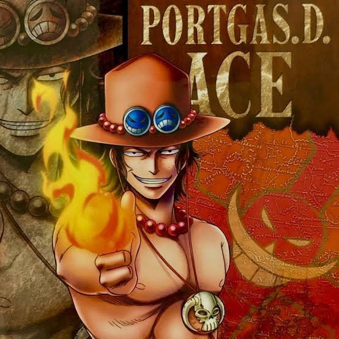

1997 - 2019
"I don't wanna live a thousand years. If I just live through today, that'll be enough." - Portgas D. Ace
Ace had gestated in the womb of his mother, Portgas D. Rouge, for five months when his father, Gol D. Roger, was executed. To protect Ace, Rouge kept him in her womb for an additional 15 months, giving birth to him on Baterilla a year and three months after Roger's death but dying from the exertion immediately afterwards. During his childhood, Ace would encounter people who voiced their hatred of Roger and any offspring he might have, causing him to feel alone and worthless. Once, this led to him beating some of them to near death, shocking Dadan. When Garp came to visit, Ace asked if he should have been born at all, and Garp replied he could only find that out by living. Ace later met Sabo on Gray Terminal, which Sabo claimed to be from. The two shared a dream of becoming pirates and stole money and treasure in preparation for the day they would set off to sea.
One day when he was ten, Ace returned home after hunting a buffalo when Garp brought his grandson Monkey D. Luffy to live with Dadan. When he saw Luffy, Ace spat on him.Ace met with Sabo one day, and they compared the treasure that they had stolen when Luffy, having made it all the way to Gray Terminal, called out to them. Since he found out about their dream to become pirates, Ace and Sabo tied Luffy up and decided to kill him, but were unable to.The trio continued their adventures across the island, becoming more well-known to an increasing number of people. They hunted animals and fought each other to grow stronger.The trio then proclaimed their dreams as they plotted their future pirating lives, and with a bottle of sake he had stolen from Dadan, Ace poured three cups and the trio performed an informal sakazuki ceremony to become sworn brothers.
At the age of 17, Ace set out from Mt. Colubo and began his life as a pirate.[11] Less than a year after he started sailing, he was shipwrecked on the East Blue island Sixis.Several days later, Ace was still unsuccessful in getting off Sixis, and prepared to eat a fruit, which unbeknownst to him was the Mera Mera no Mi.
As he searched the seas for Whitebeard, he plotted to take advantage of another attack on the Emperor to strike at him while his crew was weaker, and he and his crew went to one of Whitebeard's islands which they had heard he was heading for. However, they were confronted by Jinbe, who had been following them around. Angered at Ace burning Whitebeard's flag on Fish-Man Island, Jinbe intended to battle him to prevent him from going after Whitebeard.Whitebeard, who had heard that Ace intended to take his head, arrived with his crew and the Moby Dick just after the battle between Jinbe and Ace. Whitebeard told his crew that he alone would be enough, and proceeded to attack Ace's crew. Whitebeard easily defeated the rookie. On the brink of death, Ace was offered by Whitebeard to join his crew, becoming one of his "sons". Ace fiercely refused, but was knocked out and dragged onto Whitebeard's ship, nonetheless. Ace's crew later came to retrieve him, though they were beaten up by his captors and abducted onto the ship with their captain. When Ace came to, he was already acknowledged as one of Whitebeard's crew. To make sure that his crewmates stayed alive, Ace remained aboard Whitebeard's ship.
One day, Teach(Blackbeard) murdered his crewmate Thatch in order to obtain the Yami Yami no Mi Devil Fruit, which he had had his sights on, and fled. Since Ace was his commander and the Whitebeard Pirates live by a code which means they must avenge a fallen comrade, Ace would have been sent after the murderer.Ace finally found and confronted Blackbeard and his crew on Banaro Island. He and Blackbeard exchanged a few words before Blackbeard offered him the chance to join his crew and help him become Pirate King. However, when Blackbeard revealed that he was intending to go to Water 7 and capture Luffy, Ace got angrier as he refused, revealing his relationship with Luffy.As the two continued to clash, Blackbeard began to physically overwhelm Ace and once again offered him the chance to join his crew. Ace refused again and brought out a massive fireball as he engaged in a massive final clash with Blackbeard's darkness.After being defeated by Blackbeard, Ace was brought into the World Government and incarcerated in Level 6 of Impel Down before he was sentenced to public execution at Marineford.
Ace was put on his knees at the execution platform while the Marines awaited the arrival of Whitebeard.The Whitebeard Pirates then arrived, and Ace called out to Whitebeard to leave him, since it was his fault, he went after Blackbeard and got captured. However, Whitebeard claimed that he had ordered Ace to go after Blackbeard.As the battle continued, Ace watched as Garp refused to enter the fray, with the Vice Admiral expressing bitterness over the path his adoptive grandson chose in life. Ace then spotted a battleship containing Luffy and other prisoners of Impel Down falling out of the sky. Ace and Luffy called out to each other when they saw the other.With the battle resuming, Marco attempted to rescue Ace, but was punched away by Garp. Ace then put his head down and started weeping as he saw all the pirates in front of him being dedicated to saving his life, which many others had considered worthless.Ace watched as his captain continued to press on. The executioners, having returned, raised their blades to try to execute Ace, but they were suddenly knocked out by Luffy unleashing Haoshoku Haki.Ace sat stunned by Luffy's Haki before he watched as Inazuma created a ramp for Luffy to run to the execution platform.The Marines fired cannonballs at Ace and Luffy,Ace was freed and used his Devil Fruit powers to shield himself and Luffy from the explosion.
After landing on the ground, Ace and Luffy quickly went to work fighting off the Marines in tandem.Ace went back and attacked Admiral Akainu, but was overwhelmed due to Akainu's magma fruit being superior to his own fire. Akainu then ambushed an unsuspecting Luffy, and Ace stepped in front of the Admiral, whose magma fist went through his torso and burned up his insides.
With Ace still alive in the immediate aftermath, Akainu prepared to attack him again, but was intercepted by Jinbe. The dying Ace fell into Luffy's arms, and he recollected how he had first been given a place with Luffy, Sabo, and Dadan as he remembered a childhood otherwise filled with torment and persecution. He only regretted that he would not be able to see Luffy's dream come to pass, and he then called out to his crew, thanking them for loving him despite his bloodline and faults. After this, he fell to the ground and passed away with a smile on his face.
Ace, along with Whitebeard, was buried on an island near the latter's home island somewhere in the New World. His trademark hat, necklace, and knife were made into a grave marker, which was placed beside Whitebeard's and covered with flowers and swords left behind by his crewmates, with the members themselves standing on either side of the island, paying their last respects. Before departing with his crew, Shanks thought of how surprised he was by Ace's final sacrifice and likened it to something his late captain Roger would have done.